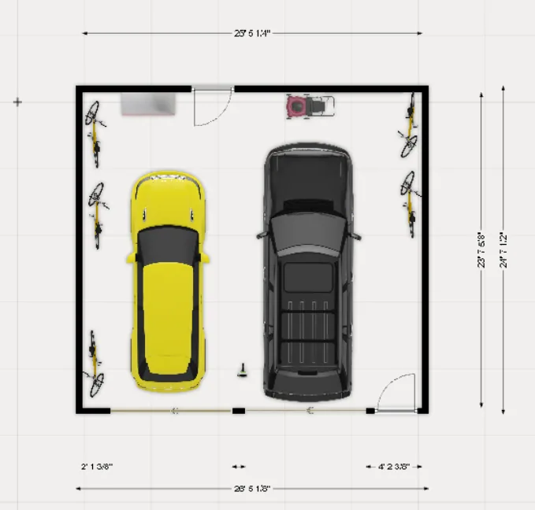
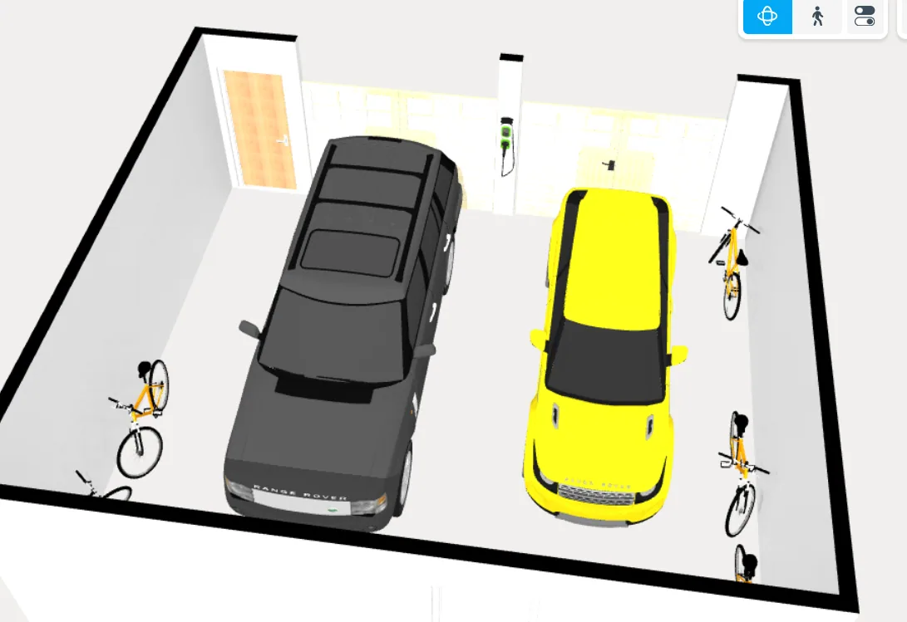
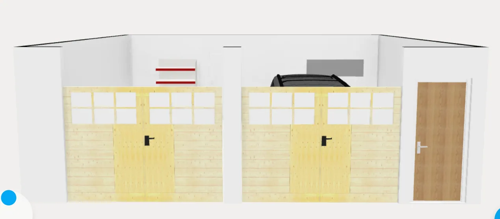

Garage
Needs
Large two car garage
Space for truck GMC Sierra and sedan. Maximize allowed door sizes for Birmingham, which is two 9’ doors.
Space in front and side of the vehicles for tools, bikes, lawn mower
High voltage plugs for car chargers
Drive straight into the garage, no driveway twists
Wants
One EV charger on the interior wall pier between the two garage doors, not beside the house door or on a side wall. Keep the cable coiled off the floor. Verify electrical supply, mounting, protection, and cable reach to both vehicles.
Five bikes in roll-in floor-level wheel racks, with both wheels on the floor. No hanging hooks or vertical lifting. Keep the alcove aisle clear; remove the fixed workbench that blocked access.
Painted walls and ceiling
Epoxy coated garage floor
Working layout
Clerestory installation concept: all three high windows retain sizes, plan locations and floor-relative sill heights. White drywall returns and opening-width white sills are 1 inch thick and 6 inches deep from interior frame face to the front flush with the garage wall. Frames move outward only normal to the wall, with solid local backing allowances. Required deeper framing, insulation, anchors and flashing/drainage remain under professional review, not approved construction. See window holds.
Current footprint: the garage floor is L-shaped, with maximum model bounds x=31.2-55.5 ft and z=15-49 ft: 24 ft 3.6 in wide by 34 ft deep overall. Its north leg starts at x=44.233 ft; the full west edge at x=31.2 begins at z=26.9 ft. The north-leg empty bounding-box corner is not garage floor.
Kids-room alignment: the west partition at z=26.9-34.6 ft moves east 26.4 inches to x=31.2, continuing the bathroom wall without a jog. Garage floor area decreases by 16.94 sq ft; that strip becomes house-level hardwood in the kids room. Refit the tool rack at x=34.6 with 72-inch shelves/board instead of 81.6 inches; retain all tools, four crates, mower and vacuum, with inset mower/toolbox positions. Vehicles, bikes, doors and outer footprint stay fixed. Verify occupied vehicle access, storage anchorage/load capacity, structure and the revised garage fire-separation assembly before construction.
High windows and easy-reach wall tools
Three long, fixed picture windows on the east/outside wall bring daylight above the storage zone. Each proposed opening is 72 × 18 inches, with its sill 7 ft 6 in and head 9 ft above the garage slab. Centers are at z = 19.5, 29.5 and 39.5 ft; all stay clear of the side pedestrian door. The lowest modeled casing is 85.5 inches (7 ft 1.5 in) above the slab, keeping the lower wall solid and usable for storage. Trim is white inside with black exterior frames. Confirm standard products, headers, safety glazing, weatherproofing, property-line/fire limits, privacy and actual daylight; this is not a daylight calculation or construction approval. See the window schedule.
The separate 30-inch hanging station moves intact to the north garage wall, center (46.75, 15.175), west of the bikes. Its constituent tool bounds are approximately x=45.5–48.071, z=15.145–15.761 ft; a three-foot-deep retrieval zone in front is clear in the model. A full-length rake, broom and dustpan retain individual clips and four spare hooks. Main clips are around 5 ft above the slab; all tools stay off the floor. Keep the approach free. These are generic tools, not selected products; verify actual widths, hook spacing, reach, anchorage and blocking without compromising fire separation.
Parking and access
Entry trim correction: matching 2.5-inch stock casing legs on both faces retain the 5.5-inch Craftsman head, bead, cap and 1/8-inch reveal. This service-door-only profile clears the mudroom west corner by 0.525 inch instead of overlapping it by 0.475 inch. Garage legs now rest on the intermediate tread, not float at house level; mudroom legs meet tile and baseboard ends meet the narrower casing. A 36 × 4.2-inch finish saddle meets tile 0.486 inch above structural datum. The 36 × 96-inch opening, west hinge, closed pose and centered 48 × 11-inch tread stay fixed. Structural rises remain 7.5 inches; finished upper rise is 7.986 inches. Landing, finished riser uniformity, rated door/sill, drainage and fire separation require professional review; this remains an unapproved no-top-landing study.
Tool-storage appearance: textured Poly Haven CC0 assets replace five wall-tool stand-ins (two wrenches, hammer, handsaw and drill) and all four upper bins with plastic crates. A 16-inch-wide metal toolbox sits at the right end of the existing charging shelf, retaining all three battery docks. The crates are 12 inches wide, approximately 10.64 inches high and 16.43 inches deep. Models are uniformly scaled generic references, not selected products; physical mounts, electrical charging guidance and shelf loading remain unverified. Use Inspect garage storage for a closer look.
The wall shelves remain because the downloaded floor-standing racks would interfere with the mower and retrieval area. Keep the mower's full handle, rolling vacuum, leaf-blower cradle, bikes, car envelopes and entry steps unchanged. Imported props stay inside the existing equipment station's floor footprint; the separate garden-tool rail is now beside the entry, as described above. Do not add a workbench or reduce the approach to make a downloaded model fit.
Bike appearance: five copies of the downloaded Bicycle by Poly by Google, licensed CC BY 3.0, replace the handmade bikes. The original GLB is unchanged; the viewer rotates and uniformly scales it to 65 inches long, approximately 22.4 inches wide and 38 inches tall. These are generic visualization copies, not five selected products or accurately sized children's bikes.
Bike alcove: five independent floor stands stay along the right-hand (east) wall, tightened to 24-inch centers, with the access aisle beside the mudroom wall. Alternate bikes head-to-tail: bikes 1, 3 and 5 go front-wheel-in, while bikes 2 and 4 go rear-wheel-in. Both wheels stay on the floor; no lifting. Adjacent handlebars sit at opposite ends rather than all lining up near the wall. The 22.36-inch-wide imported bikes retain approximately 1.64 inches between their full width envelopes and occupy 118.36 inches along the wall, one foot less than at 27-inch centers. The west-side aisle remains approximately 50.6 inches. Straight pull-out can preserve that lateral separation; turning, hand clearance, actual bike widths and wheel-stand compatibility remain unverified. The west aisle does not establish a verified exit past the parked vehicles. Keep it free of cabinets and loose storage.
Current garage elevation: keep both nominal 9 × 8 ft openings, light oak doors, white surrounds and cream queen brick. Replace the rejected 21.25 ft gable with a genuinely one-story four-sided 6:12 hip, crown 12.475 ft, outer eaves 8.9 ft above the house datum. The 9 ft wall heads remain fixed; roof void only, no upper room, windows, slab or accessible storage. Roof bounds stay south of z=35.55, clear of loft glazing. Keep the matching 3:12 metal brow, narrow wall-abutting return, closed stepped porch connection, white fascia/undersides, gutter and east leader concept. Trusses/bearing, ledgers/outriggers, garage header loads, flashing, outlets, ventilation and fire separation require professional review. Door operation and saved layouts are unchanged.
The mudroom's garage-side wall moves another exactly 6 inches west, x=44.733333 to 44.233333 ft, over z=15–26.9. The forward garage bay grows from 10.766667 to 11.266667 ft (135.2 inches), gaining 5.95 sq ft this revision; mudroom nominal width becomes 80.8 inches. Cars, bikes, equipment, garage entry and steps remain fixed. The north closet keeps its enclosure size but its standard 48 × 96-inch paired opening shifts 4 inches west inside it to clear the relocated east bench. This adds width beside parking, not verified forward travel: check actual mirrors, bikes, equipment, doors and required circulation before moving a vehicle farther in.
Step alignment correction: center the 48-inch tread and its nosing beneath the 36-inch doorway, extending 6 inches each side. Tread bounds are x=37.5–41.5 ft; the threshold remains x=38–41. This supersedes east-only widening below. Keep the 11-inch going, two 7.5-inch rises and no-landing concept, subject to professional review.
House arrival study — no top landing: retain the 36 × 96-inch opening at x=38–41 ft, west-hinged inward leaf closed by default, and all current storage/tools. Replace the L landing with ONE 48-inch-wide, 11-inch-deep intermediate tread directly south of the door at -7.5 inches. Widen 12 inches east only to preserve the west wall/mower side; the door and threshold stay 36 inches wide. House 0 and garage -15 inches give TWO 7.5-inch rises, never a single 15-inch riser. Only the existing 4.2-inch wall-thickness threshold remains at house level; contrasting nosings mark both drops. See mudroom layout and limits.
Garage door-swing study: click or tap a yellow vehicle-door panel to toggle it between closed and 60 degrees. There are no + / - markers; keyboard users can Tab to a door control and press Enter or Space. Rotate to reach the other side, or use the 2D plan. The closed stand-in remains visible. Both vehicles use assumed 44-inch front and 36-inch rear doors, not measured BMW/GMC door geometry. No automatic collision verdict, continuous swept-volume check, mirror motion or occupied-access approval is provided. Vehicle asset replacement is deferred; the truck remains the Sierra EV, not a gasoline Sierra.
- Keep the full-size Sierra EV in the right bay, now aligned with its 9-foot door at (48.5, 38), 6 inches farther right. Keep the BMW left, but move it 6 inches farther into the garage to (37, 40). BMW rear-to-inside-wall allowance improves from about 5.7 to 11.7 inches, while retaining approximately 36.5 inches ahead to equipment projections in its lane. Truck nose/rear allowances remain approximately 14/13 inches; truck-side mirror clearance is about 34 inches. These are modest parking improvements, not a larger garage, vehicle-door clearance or turning simulation.
- The center mirror aisle increases from approximately 43.4 to 49.4 inches; truck-body separation from the mudroom steps increases by 6 inches to approximately 30 inches where their footprints approach. Keep the mudroom/exterior walls, vehicle sizes, door openings, bikes and charger unchanged. In the exterior view, click/tap a garage overhead panel to show its conceptual raised pose; real tracks, ceiling storage, spring balance and stops are not modeled. Real overhead-door travel, steering paths, passenger-door sweeps, parking sensors and stops need checking; rear bumper allowances are not walking routes.
- Keep the equipment station on the house-side wall in front of the BMW, not beside the truck. The conventional mower now rests on four wheels, with its handle fully unfolded, centered approximately (30.65, 28.615); its grip extends to about z = 31.865. No upright-storage capability or fuel type is assumed. Move the rolling vacuum to the right end of the station near (35.05, 28.115). The leaf blower has an obvious dedicated wall cradle at the left side of the tool board, with its body 5 ft 4 in above the garage slab and nozzle clear of the lower shelf. Retain the tools, charging shelf and upper bins. Verify the owner's actual equipment envelopes, fuel/charging instructions, retrieval, vehicle doors and a 36-inch cross-aisle.
- Tread x=38–42, z=27.075–27.991667 ft; threshold x=38–41, z=26.725–27.075. No platform or east return. The tread leaves 49.85 inches to the BMW front body; the inter-vehicle mirror aisle remains 49.35 inches. Widening consumes 12 inches of east-side passage; use the direct south approach, not an assumed 36-inch east corridor. Vehicles and tools are unchanged. Static gaps are not occupied-route, retrieval or simultaneous open vehicle door approval.
- No-top-landing concept is NOT code/operating approved. The selected garage rated assembly and any landing exception, inward swing, self-closing/latching, handrails/guards, threshold transition, drainage and supports/anchorage require professional review before construction or use. No rails are modeled. West casing remains about 0.275 inch off the adjoining wall: verify framing/scribe. Do not hold a fire door open. Not a step-free route. Kitchen opening and mudroom storage stay fixed.
Garage Concept
- The vehicles are approximate closed-object stand-ins using referenced Sierra EV and BMW i4 dimensions, not exact models or verified door-sweep envelopes. See the current vehicle, storage, level, and clearance schedule; confirm the actual model year, trim, mirrors, doors and garage hardware.


